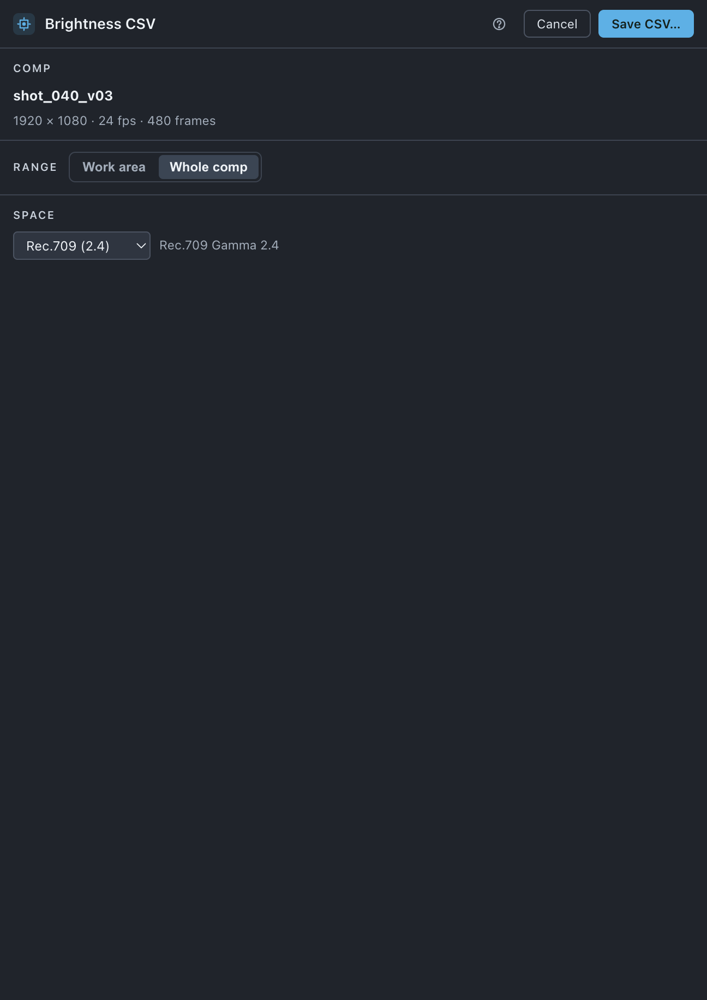

Brightness
Reads the centre pixel of a comp on every frame and writes its brightness to a CSV — the curve a light is driven from.
Use it when
- A practical light on set, an LED strip or a lamp in a model has to follow what is on screen, frame for frame.
- You have a finished comp and someone downstream wants frame, value and nothing else.
- You want the curve from the comp itself, before anything is rendered.
- A grade or a timing change has moved, and the CSV has to be written again.
What it does
Opens the comp that is active in the timeline, reads the pixel at its centre on every frame of the range you choose, converts that value to linear light and writes one row per frame to a CSV: a frame,brightness header, then frame number, value with the value between 0 and 1. Transparency counts as black — a half-transparent white pixel writes 0.5. The file is the same shape Toolbox Explorer writes from a movie, so anything that reads one reads the other.
What it does not do: it does not average the frame, smooth the curve or offset it in time, and it does not read a movie; those are Toolbox Explorer's. It reads one pixel, the centre, and the comp is left exactly as it was.
Do it
- Open the comp in the timeline. The sheet follows whichever comp is active; with none open it says Open a comp in the timeline.
- Press the Brightness tile. Comp names the comp with its size, frame rate and the number of frames that will be read.
- Choose Range: Whole comp or Work area.
- Check Space. It opens on what your project's colour settings say — Rec.709 (2.4) for the default working space, Linear when Linearize Working Space is on, sRGB for an sRGB working space — and the project's own working-space name is written beside it. Change it only if you know the comp's values are in something else.
- Press Save CSV…, name the file and choose where it goes. The name offered is comp name.brightness.csv.
- Wait. The button reads Sampling 96 of 480… while it works; After Effects renders each frame to read it, so a heavy comp takes about as long as a preview of it. Cancel stops it and writes nothing.
Scope. The active comp, nothing else. There is no selection scope and no batch — one comp, one file.

What you'll see
| Option | What it means |
|---|---|
| Comp | The active comp — 1920 × 1080 · 24 fps · 480 frames. The frame count follows the range. |
| Range | Whole comp reads from the comp's first frame to its last. Work area reads the work area only, and the frame numbers in the file are the comp's own, so the first row is the frame the work area starts on. |
| Space | How the value After Effects hands back is turned into linear light. Rec.709 (2.4) is a 2.4 power, the curve the default working space uses. sRGB is the sRGB curve. Linear leaves the value as it is. |
| Save CSV… | Opens the save dialog. Nothing is read until you confirm it. |
| ✓ Wrote shot.brightness.csv · 480 frames | The result. · n clipped follows it when a 32-bit comp carried values above 1, which are written as 1. |
Notes it may raise, and what they mean:
- Open a comp in the timeline — nothing is active, so there is nothing to read.
- the work area is empty — the range would read no frames; widen it or choose Whole comp.
- the read failed — … — After Effects refused, and the message that follows is its own.
Undo
The comp is not changed. Reading it adds a temporary comp to the project and removes it again in the same step, so ⌘Z after a run has nothing of yours to undo. The CSV is a file on disk; the save dialog asked before it was written, and writing over an existing file is what that dialog's own warning is for.
Watch out
Things you might not think to do
- Use the work area as a trim. Set it around the shot you want and the file starts at that frame number, so it lines up with an edit without renumbering.
- Write it again after a grade. The sheet remembers the range and the space.
Pairs with
Render renders the comp this reads. Toolbox Explorer does the same job from the rendered movie, with averaging and smoothing.